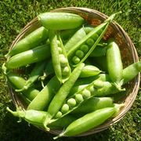

Produzione 2019
Zucchine

Coltivare in terreno molto ricco di materia organica e non coltivare dopo Solanacee o piante della stessa famiglia delle cucurbitacee
- Varietà: Zucchina chiara di Faenza
- Periodo di semina: Marzo / Aprile
- Primo raccolto: Fine aprile
- Ultimo raccolto: Fine luglio
- Raccolto:
| Dimensione |
Quantità |
| Piccole (10cm) |
16 |
| Medie (11-16cm) |
26 |
| Grandi (>16cm) |
9 |
|
51 |
Acquista semi
Piselli

American Wonder: Varietà media precoce come ciclo colturale.
Consigli
- Piantare in semenzaio riscaldato
è importante:
- Acquistare vasetti biodegradabili (di cocco o cartone)
- Mantenere areato il semenzaio per evitare muffe
- Non usare il coperchio del semenzaio
- Non mettere il semenzaio vicino al termosifone
- Fissare i sostegni nel terreno non appena le piantine raggiungono i 10cm
- Acquistare una rete con spazi di non più di 10cm per garantire sostegni adeguati
Acquista semi